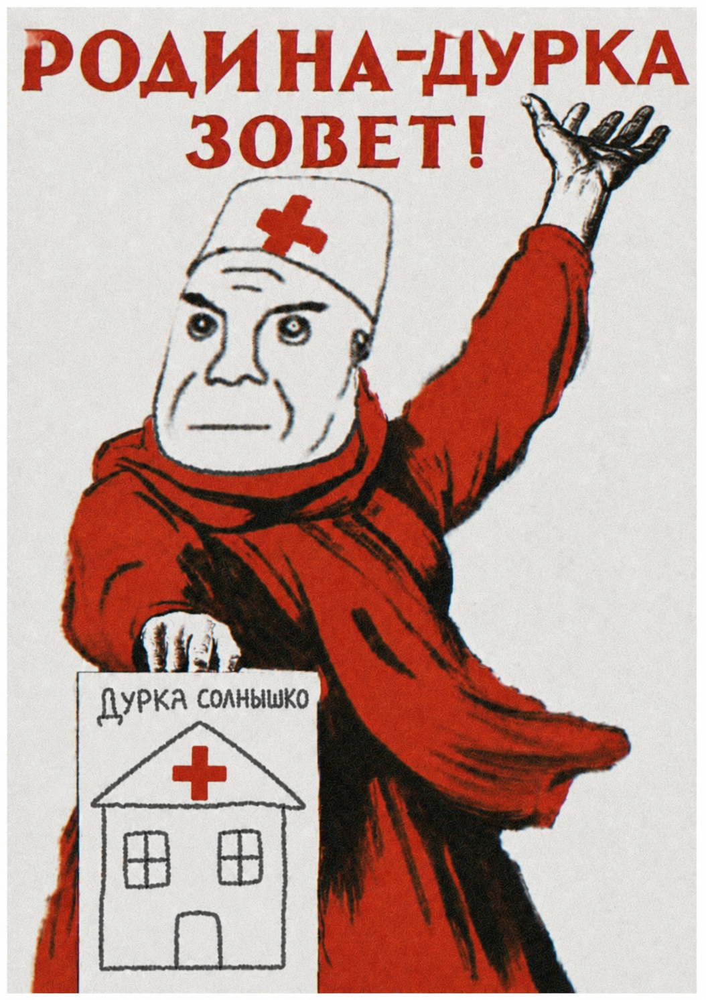

Наше долгое и увлекательное путешествие начинается с 1 класса и заканчивается в 9 или 12 классе в зависимости от вашего выбора. Всего есть три этапа обострения: Начальная стадия с 1 по 4 класс, гимназическая стадия с 5 по 9 класс и расширенная стадия с 10 по 12 класс. На каждом этапе вас ждет множество увлекательных приключений и испытаний, которые помогут вам развить свои навыки и способности в области обострения и безумия. Вы сможете научиться неуправляемости своих эмоций, развивать свою неадекватность и находить нестандартные решения в сложных ситуациях. В конце нашего путешествия вы сможете стать настоящим мастером обострения и безумия, готовым к любым вызовам и приключениям, которые ждут вас в будущем. Помогать вам с этим будут одноклассники, которые также будут проходить этот путь вместе с вами, и учителя и администрация как боссы, которым вы будете учится сопративлятся на каждом этапе вашего развития. Наше лечение от адекватности и обострение работает по простой формуле: мы с каждым годом плавно снижаем контроль над пациентами по популярным опасным нормам и они сами лечатся и обостряются социально и не поддерживаем ябеднечесво на нарушение норм. Так же специально так нудно и плохо продвигаем противоположные ценности-адекватность и контроль что ученики понимают что это бред и делают наоборот. Хорошего вам путешествия
